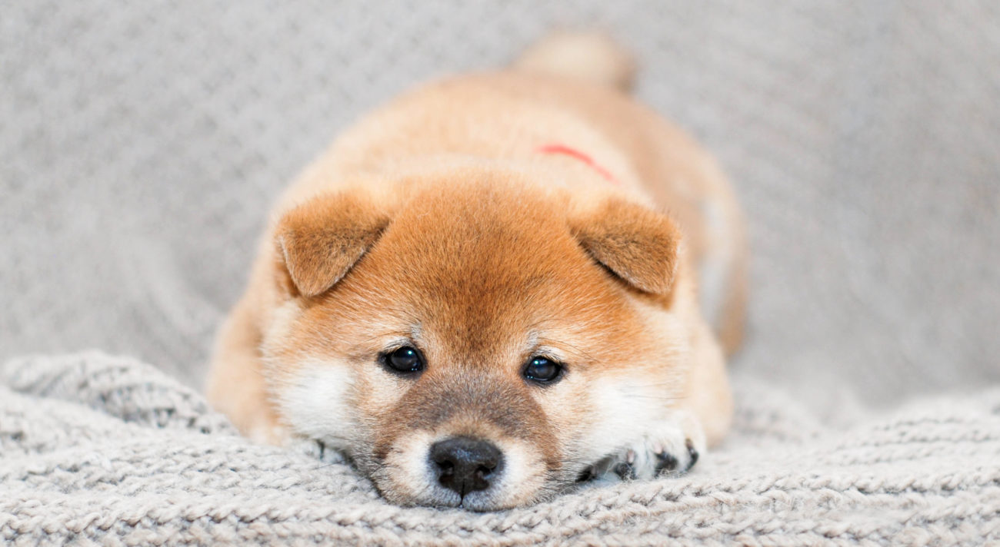
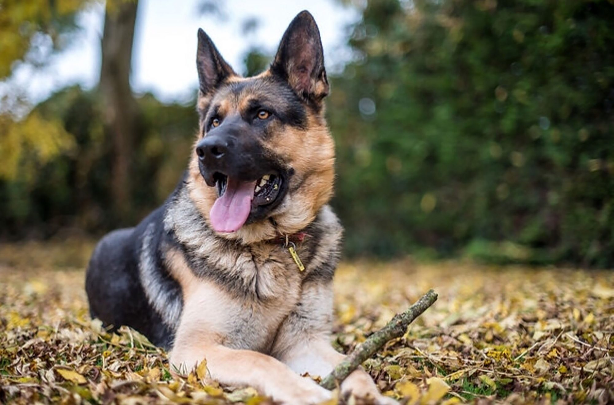
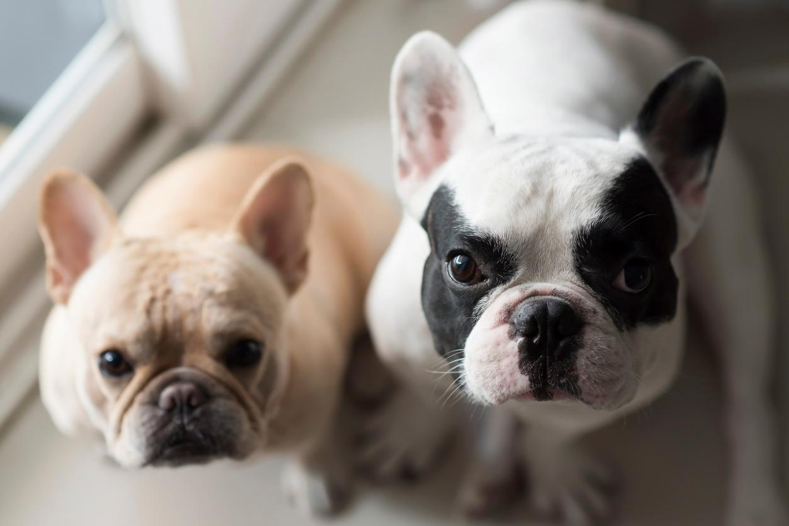
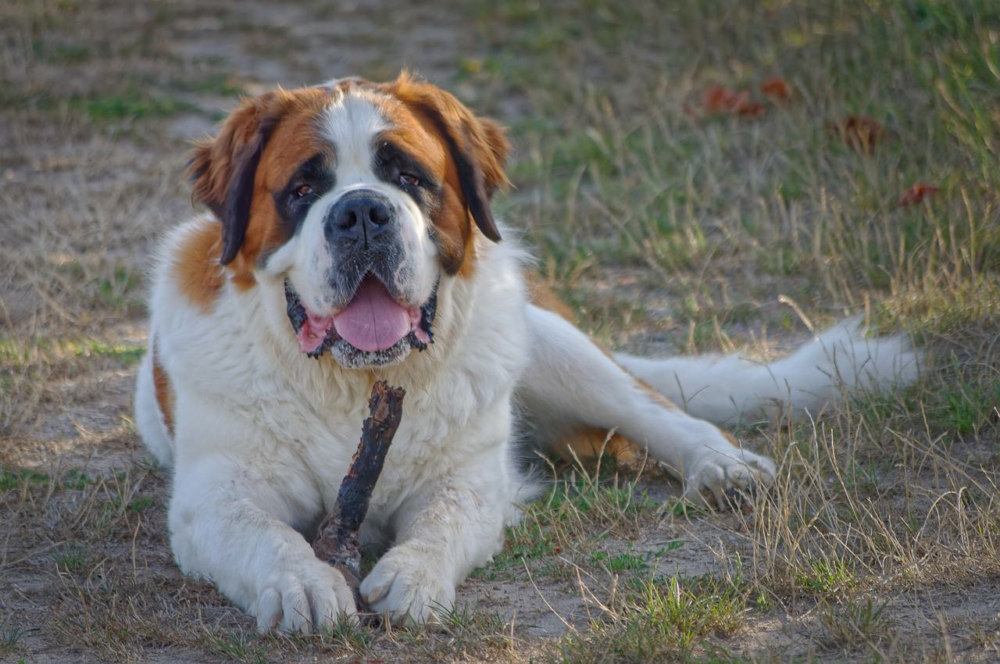

🌎世界別犬種紹介🐕
📖世界の犬種を見てみよう！
🇯🇵 日本🍵

柴犬は日本を代表する犬種で、小さめの体にきりっとした顔立ちを持っています。 くるんと巻いたしっぽや、三角の耳、少しツンとした表情がとても魅力的です。 飼い主に対して忠実で、落ち着いた雰囲気があるところも人気の理由です。
柴犬のかわいいNO.1ポイントは、表情の豊かさです。 まじめな顔をしていると思ったら、急ににこっと笑ったような顔を見せることがあります。 日本らしい凛々しさと、素朴なかわいらしさをあわせ持つ犬です。
🇬🇧 イギリス🫖

ボーダーコリーは、牧羊犬として活躍してきた犬種です。 とても賢く、人の指示を理解する力や集中力に優れています。 走ったり、ジャンプしたり、物を追いかけたりすることが得意で、運動能力も高い犬です。
ボーダーコリーのNO.1ポイントは、かしこさと一生懸命さです。 何かに集中しているときの目は真剣で、まるで仕事人のようです。 その一方で、飼い主と遊ぶときには全力で楽しむため、かっこよさとかわいさの両方を持っています。
🇩🇪 ドイツ🍺

ジャーマン・シェパードは、警察犬や災害救助犬としても知られる犬種です。 体が大きく、力強い印象がありますが、信頼した相手にはとても忠実です。 勇敢で落ち着きがあり、人を助ける仕事にも向いています。
ジャーマン・シェパードのNO.1ポイントは、頼もしさです。 そばにいるだけで安心感があり、まるで頼れる相棒のような存在です。 かっこいい見た目の中に、家族を大切にするやさしさがあるところも魅力です。
🇫🇷 フランス☕

フレンチ・ブルドッグは、丸い体と大きな耳が特徴の犬種です。 表情がとてもユニークで、少し困ったような顔や、眠そうな顔もかわいらしく見えます。 人と一緒に過ごすことが好きで、家庭犬としても人気があります。
フレンチ・ブルドッグのかわいいNO.1ポイントは、存在感です。 ちょこんと座っているだけでも目を引き、見ている人を自然と笑顔にしてくれます。 かっこつけていない自然な愛らしさが、この犬種の大きな魅力です。
🇨🇭 スイス🧀

セント・バーナードは、スイスの山岳地帯で活躍してきた超大型犬です。 大きな体と厚い毛を持ち、寒さに強いことから、雪山で遭難した人を探す救助犬として知られるようになりました。 力強い見た目ですが、性格は穏やかで落ち着いており、人に対してやさしく接する犬種です。
セント・バーナードのかわいいNO.1ポイントは、大きな体とやさしい表情の組み合わせです。 ふわふわの毛や垂れた耳、少し眠そうに見える顔が親しみやすく、そばにいるだけで安心感があります。 家族と過ごすことが好きで、体は大きくても甘えん坊な一面を持っています。